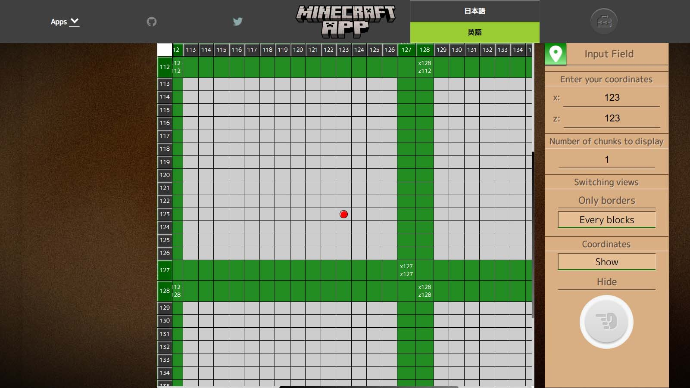

マイクラ用の便利なアプリ集 マイクラで使える便利なアプリを自作して集めています。  マイクラのチャンク境界チェッカー 座標を入力するとチャンクの境界を計算します。 マイクラのマップ・ピクセルアート用シミュレーター このページはマイクラのマップやピクセルアート用に画像を変換するシミュレーターです。 変換出来る画像は画像ファイルや内蔵したツールで自作した画像です。 ブロックの色もマップと素の色の2色を新規登録してアップグレードできます。